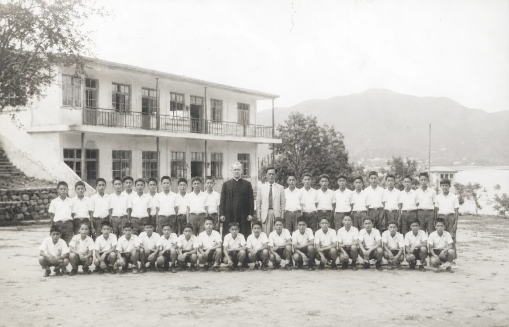

六十逾年，塑造有良知、有好奇心、有品格的青年——在西貢郊野公園之畔。

1960 年創校文理路德中學於 1960 年由香港路德會創立,旨在讓年輕人在追求知識的同時,不失去生命的意義。我們的名字——Cognitio——是拉丁文「認識」之意,是對每一位文理學生的承諾:真正的教育不是堆砌事實,而是認識世界、認識自己、認識上帝的過程。
從北潭涌邊的單一課室大樓,發展至今容納超過 900 名學生的完整校園,環境始終如一:我們依然坐落於睿智谷之畔,西貢郊野公園的起點,學校生活的節奏,與潮汐和山徑同步。
讓每一位離開文理的學生,擁有更敏銳的頭腦、更穩健的良心、更廣闊的視野,具備服務世界的力量。
我們透過基督教靈命培育、嚴謹的學業要求與全人發展實踐這份願景。我們相信:沒有品格的知識是不完整的,而沒有能力的品格尚未準備好承擔世界的責任。
即使沒有人看見,也要真實地生活與學習。
善於提問、專注聆聽、獨立思考。
將所學用於他人,而非僅為自己。
珍惜並守護所托付的人、地方與地球。